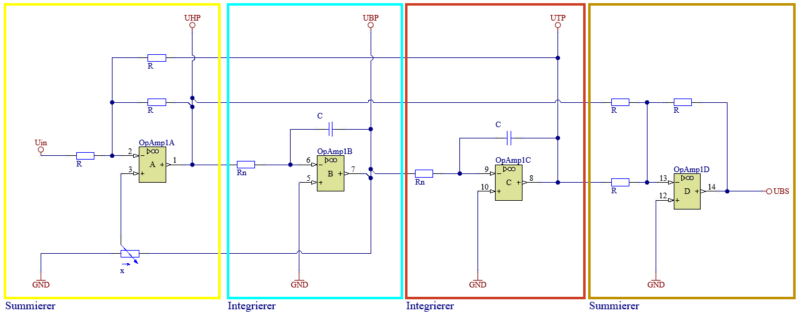
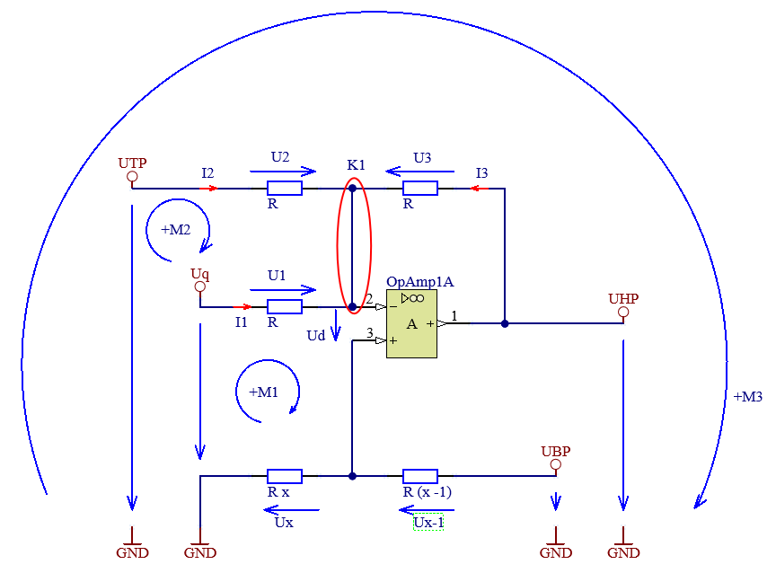

Filter allgemein werden eingesetzt um Signale zu verarbeiten. Ein Filter kann dabei unterschiedliche Aufgaben übernehmen. Ein Filter kann z.B. dazu verwendet werden, um ein Signal zu glätten, um Störungen zu unterdrücken oder um Signale zu trennen. Filter können dabei unterschiedliche Strukturen aufweisen.
Der hier vorgestellte State Variable Filter, Abbildung 10.1 ist ein Filter, welcher mit einer Schaltung sowohl als Tiefpassfilter, Hochpassfilter, Bandpassfilter oder Bandsperre verwendet werden kann. Welcher Filter auf das Eingangssignal angewandt wird, wird durch die Auswahl des Ausganges bestimmt.

Abbildung 10.1: Schaltung eines State Variable Filters
Code
##| echo: falsew = MySymbol('omega',real=True,positive=True,description='Kreisfrequenz',unit=u.rad/u.s)Uq = MySymbol('U_q',real=False,description='Eingangsspannung',unit=u.V)UHP = MySymbol('U_HP',real=False,description='Spannung am Hochpass Ausgang',unit=u.V)UBP = MySymbol('U_BP',real=False,description='Spannung am Bandpass Ausgang',unit=u.V)UTP = MySymbol('U_TP',real=False,description='Spannung am Tiefpass Ausgang',unit=u.V)UBS = MySymbol('U_BS',real=False,description='Spannung am Bandsperre Ausgang',unit=u.V)QBookHelpers.print_description([Uq,UHP,UBP,UTP,UBS])
\(U_{q}\) … Eingangsspannung
\(U_{HP}\) … Spannung am Hochpass Ausgang
\(U_{BP}\) … Spannung am Bandpass Ausgang
\(U_{TP}\) … Spannung am Tiefpass Ausgang
\(U_{BS}\) … Spannung am Bandsperre Ausgang
Das Verhalten von Filtern kann am besten mit deren Übertragungsfunktion beschrieben werden. Dabei geht es immer darum, das Verhältnis von Ausgangssignal zu Eingangssignal zu beschreiben. Da sich das Wort Filter auf Frequenzen bezieht, wird die Übertragungsfunktion in der Regel im Frequenzbereich betrachtet. Ob dabei nun die komplexe Schreibweise \(j\omega\) oder die Laplace-Transformation \(s\) verwendet wird, hängt im Wesentlichen davon ab welche Art von Eingangssignalen betrachtet werden sollen.
Für den hier gezeigten State Variable Filter müssen die Übertragungsfunktionen für die vier möglichen Filtertypen analytisch berechnet werden.
Die analytisch berechneten Übertragungsfunktionen der Filter werden verwendet, um Bodediagramme zu erstellen. Diese Bodediagramme geben Aufschluss über das Frequenzverhalten des Systems, indem sie die Verstärkung und Phasenverschiebung in Abhängigkeit von der Frequenz darstellen. Im Anschluss an die Berechnung der Bodediagramme auf analytischer Basis erfolgt der Vergleich mit numerischen Simulationsergebnissen, die in Altium durchgeführt werden.
Der Vergleich zwischen analytischen und simulierten Ergebnissen ermöglicht eine Überprüfung der Genauigkeit des mathematischen Modells sowie der Simulationseinstellungen in Altium. Eventuelle Abweichungen können auf Vereinfachungen im analytischen Modell, numerische Fehler oder auf die verwendeten Bauteilparameter in der Simulation zurückzuführen sein.
10.1 Analytische Herleitung der Übertragungsfunktionen
Ziel ist es, die Übertragungsfunktion für jeden Filtertyp zu ermitteln. Also immer das Verhältnis von Ausgangsspannung zu Eingangsspannung mathematisch zu beschreiben. Das Ergebnis darf keine abhängigen (unbekannten) Variablen mehr enthalten. Folgende Gleichungen sind gesucht:
Um die Komplexität zu reduzieren wird die Schaltung in möglichst einfache Teilschaltungen zerlegt.
Hier bietet sich die an, die Schaltung rund um die Operationsverstärker und deren jeweiliger Beschaltung zu betrachten.
Damit die Übertragungsfunktionen der Teilschaltungen berechnet werden können müssen die Eingangsspannungen der Teilschaltungen zunächst als bekannt angenommen werden.
Die Teilübertragungsfunktionen ergeben ein Gleichungssystem welches im Anschluss gelöst werden muss um die gesuchten Übertragungsfunktionen ohne unbekannte Variablen zu erhalten.
10.1.1 Summierer am Eingang
Der erste Operationsverstärker in der Schaltung fungiert als invertierender Summierer. Wird die Schaltung umgezeichnet ist der Summierer gut erkennbar. Einzige Besonderheit ist die Offsetspannung am positiven Eingang.
Statt die Gleichungen für den Summierer anzupassen um die Übertragungsfunktion zu erhalten, wird die Übertragungsfunktion hergeleitet.

Abbildung 10.2: Summierer am Eingang
Das Potentiometer wurde für die Herleitung aufgeteilt, damit der Spannungsteiler besser dargestellt werden kann. \(x\) ist dabei der einstellbare Anteil des Potentiometers. Die Herleitung wird nach dem verfahren der Knoten- Spannungsanalysen, Kapitel 2 durchgeführt. Allerdings wird nicht jeder Schritt im Detail gezeigt.
Da die Spannung \(U_{HP}\) der Ausgang des Summierers ist, wird diese Spannung als Ausgang behandelt. Es ist also die Übertragungsfunktion \(H_{HP} = \frac{U_{HP}}{U_{q}}\) zu ermitteln. Als bekannt gilt die Eingangsspannung \(U_q\), die Position des Potentiometers \(x\) und der Widerstandswert \(R\). Weiters wird für diesen Schritt die Spannung \(U_{TP}\) und \(U_{BP}\) als bekannt angenommen.
Im ersten Schritt werden die Knoten- und Maschengleichungen aufgestellt:
Es gibt hier einige Wege um die gesuchte Übertragungsfunktion zu erhalten. Hier wird in den Knoten \(K1\) eingesetzt. Es werden daher Ausdrücke für die Ströme gesucht. Diese können mit dem Ohmschen Gesetz ermittelt werden.
Da die Spannungen \(U_1\), \(U_2\) und \(U_3\) noch unbekannt sind, werden diese aus den Maschengleichungen ausgedrückt.
Code
eqU1 = Eq(U1,solve(eqM1,U1)[0])QBookHelpers.print_equation(eqU1, label='eq-U1')display(Markdown("Da die OPV Schaltung als ideal angenommen wird, gilt:"))eqUd = Eq(Ud,0,evaluate=False)QBookHelpers.print_equation(eqUd, label='eq-Ud')display(Markdown("damit vereinfacht sich die Gleichung zu:"))eqU1_2 = eqU1.subs(eqUd.lhs,eqUd.rhs)QBookHelpers.print_equation(eqU1_2, label='eq-U1-2')display(Markdown("Durch umformen der Maschengleichung 2 nach $U_2$ ergibt sich:"))#| ## Maschengleichung 2 nach U2 umstelleneqU2 = Eq(U2,solve(eqM2,U2)[0])QBookHelpers.print_equation(eqU2, label='eq-U2')display(Markdown("Da im Ausdruck für $U_2$ noch die ebenfalls unbekannte Spannung $U_1$ vorkommt muss hier noch @eq-U1-2 eingesetzt werden:"))eqU2_2 = eqU2.subs(eqU1_2.lhs,eqU1_2.rhs)QBookHelpers.print_equation(eqU2_2, label='eq-U2-2')display(Markdown("Durch umformen der Maschengleichung 3 nach $U_3$ ergibt sich:"))#| ## Maschengleichung 3 nach U3 umstelleneqU3 = Eq(U3,solve(eqM3,U3)[0])QBookHelpers.print_equation(eqU3, label='eq-U3')display(Markdown("Da im Ausdruck für $U_3$ noch die ebenfalls unbekannte Spannung $U_2$ vorkommt muss hier noch @eq-U2-2 eingesetzt werden:"))eqU3_2 = eqU3.subs(eqU2_2.lhs,eqU2_2.rhs)QBookHelpers.print_equation(eqU3_2, label='eq-U3-2')
\[
U_{1} = - U_{d} + U_{q} - U_{x}
\tag{10.12}\]
Da die OPV Schaltung als ideal angenommen wird, gilt:
\[
U_{d} = 0
\tag{10.13}\]
damit vereinfacht sich die Gleichung zu:
\[
U_{1} = U_{q} - U_{x}
\tag{10.14}\]
Durch umformen der Maschengleichung 2 nach \(U_2\) ergibt sich:
\[
U_{2} = U_{1} + U_{TP} - U_{q}
\tag{10.15}\]
Da im Ausdruck für \(U_2\) noch die ebenfalls unbekannte Spannung \(U_1\) vorkommt muss hier noch Gleichung 10.14 eingesetzt werden:
\[
U_{2} = U_{TP} - U_{x}
\tag{10.16}\]
Durch umformen der Maschengleichung 3 nach \(U_3\) ergibt sich:
\[
U_{3} = U_{2} + U_{HP} - U_{TP}
\tag{10.17}\]
Da im Ausdruck für \(U_3\) noch die ebenfalls unbekannte Spannung \(U_2\) vorkommt muss hier noch Gleichung 10.16 eingesetzt werden:
Nun können die Ströme in die Knotengleichung Gleichung 10.8 eingesetzt werden.
Code
##| echo: falseeqK1_2 = eqK1.subs({eqI1_2.lhs:eqI1_2.rhs,eqI2_2.lhs:eqI2_2.rhs,eqI3_2.lhs:eqI3_2.rhs})QBookHelpers.print_equation(eqK1_2, label='eq-K1-2')display(Markdown("Die Gleichung wird nun nach $U_{HP}$ umgestellt um die Übertragungsfunktion zu erhalten:"))eqUHP_1 = Eq(UHP,solve(eqK1_2,UHP)[0])QBookHelpers.print_equation(eqUHP_1, label='eq-UHP-1')
Um die Übertragungsfunktion zu erhalten müsste nun noch mit \(U_q\) dividiert werden. Davon wird hier abgesehen, da für das oben, Kapitel 10.1, beschriebene lösen der Gleichungssysteme, nur der Ausdruck für \(U_{HP}\) benötigt wird.
Der Summierer am Eingang ist damit fertig analysiert.